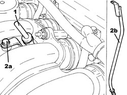
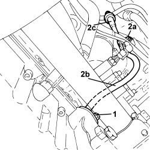

1084A16 OIL DIPSTICK PIPE - R.R
- Path
- Procedures > 10 ENGINE > 1084 ENGINE LUBRICATION > 1084A INDICATORS/CHECK DEVICES > 1084A16 OIL DIPSTICK PIPE - R.R
- Kind
- repair procedure (removal / refitting; the operation number is the code)
- Applies to
- all engines; all production periods
- Interactive page
- https://sloeber94.github.io/elrnDB-aBrrSpdr/en/#/946001987
Applies to: engines: 2.2 JTS; all production periods
 Removing
Removing
 Refitting
Refitting1. Remove the engine oil dipstick.
2. Undo the bolt (2a) and remove the engine oil dipstick tube (2b).

Applies to: engines: 2.2 JTS; all production periods
Refitting
Removing- Place the engine oil dipstick pipe back in its housing and fasten it with the bolt.
- Place the engine oil dipstick back in its housing.
Applies to: engines: 3.2 JTS; all production periods
Removing
Refitting1. Undo the bolt (1a) and remove the engine oil dipstick (1b) from its housing.

Applies to: engines: 3.2 JTS; all production periods
Refitting
Removing- Place the engine oil dipstick pipe back in its housing and fasten it with the bolt.
Applies to: engines: 2.4 JTD 20v; all production periods
Removing
Refitting- Position the vehicle on a lift.
Op. 7055B54 UNDER ENGINE PROTECTION/GUARD - R.R.
1. Undo the bolt fixing the engine oil dipstick pipe to the engine crankcase sump.
2. Undo the upper bolt (2a) and remove the engine oil dipstick tube (2b) complete with rod (2c).

Applies to: engines: 2.4 JTD 20v; all production periods
Refitting
Removing- Place the engine oil dipstick pipe complete with rod back in its housing and fasten it with the upper bolt.
- Tighten the bolt fixing the engine oil dipstick pipe to the engine crankcase sump.
Op. 7055B54 UNDER ENGINE PROTECTION/GUARD - R.R.
- Remove the vehicle from the lift.
Topics linked from this page (1)
Topics that link to this page (11)
- 1020A26 CRANKCASE SUMP - R.R CLEAN MATING SURFACES AND APPLY SEALANT FOR VEHICLES WITH AIR CONDITIONING
- 1020A20 CRANKCASE OIL SUMP - R.R CLEAN SURFACES FOR SEALANT APPLICATION
- 1028H10 CONNECTING ROD AND PISTON SET - R.R
- 1036L30 FRONT OIL SEAL FOR CAMSHAFT IN CAMSHAFT HOUSING - REPLACE
- 1072C30 LEFT EXHAUST MANIFOLD - R + R AND REPLACE GASKET
- 1084A40 ENGINE OIL LEVEL SENSOR - R + R
- 1084B34 CARTRIDGE ENGINE OIL FILTER SUPPORT - R + R
- 1084C10 ENGINE OIL HEAT EXCHANGER - R + R
- 1084C15 ENGINE OIL HEAT EXCHANGE MOUNT R R
- 1088B20 ENGINE COOLING RADIATOR - R + R
- 5510C44 DETONATION SENSOR (ONE) - R+R